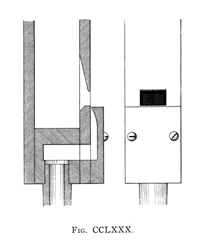

The following illustrations and descriptions are taken from Audsley's The Art of Organ Building.
The pipes which have proved the most imitative in their tones are those that most closely resemble the orchestral Flute in form. They are constructed of cylindrical tubes of hardwood, with mouths of small size, placed in relation to their blocked ends just as is the embouchure of the orchestral instrument. The formation of their caps is such that the wind is directed obliquely against the face of their upper lips, just as the wind from the human mouth is directed across the embouchure of the Flute. The cylindrical pipes are invariably harmonic, and accordingly about double their true speaking length; and they are only introduced in the higher octaves of the stop, quadrangular pipes being used for the lower octaves. Fine examples, under the name of Flauto Traverso, are to be found in Schulze's work in the Doncaster Parish Church and Leeds Parish Church Organs. As both stops are practically alike, a description of that in the latter Organ will be sufficient.
The stop is of 8 ft. pitch but is not carried down below tenor C. The cylindrical, harmonic pipes commence at a#1 and extend to the top. They are of beech wood, carefully and cleanly bored, and turned externally. The builder ... considered it unnecessary to graduate, in the usual manner, the diameters as well as the lengths of all his pipes; for we observe ... that several groups of pipes of similar diameters obtain. No apparent irregularity of tone results from this absence of regular gradation, herein showing the kill of the voicer. In the accompanying illustration are given Front Views of the a#1 and c2 pipes, both of which have the same internal diameter of 1 1/8 inch: all the other important dimensions are furnished. Each pipe has a slant planed off one side, extending from a little above its center to the foot, in which the mouth is cut, and against which the cap is placed. The mouth is a small square perforation cut in the slant; and owing to the difficult of cutting an internal slope from the outside, the voicer has found it necessary to form the upper lip with a piece of hard cardboard, glued across the slant, and pared thin, and in some cases slightly arched, at the mouth. The block and pipe-foot are turned from a single piece of wood, a piece being cut out to form the throat, as shown in the Longitudinal Section. Another method is sometimes adopted: the pipe is plugged with a cord at about the distance below the mouth equal to the internal diameter of the pipe, and below this plug is inserted the turned pipe-foot, leaving a sufficient space between for the passage of the wind into the cap, through a hold cut in the slant for that purpose. The proper form of cap for this description of pipe is that which directs the wind-sheet in a slanting direction across the mouth, as already mentioned. The cap is constructed of two pieces; namely, the cap proper, hollowed on its inner side, and having the wind-way cut in it; and a thin wedge-shaped piece of wood, slightly longer than the cap proper, and rounded along its inner edge, used for the purpose of holding the cap in a sloping position slightly above the slanting surface of the pipe. All these details are accurately shown in the two Sections given, both of which are cut through the mouth of the pipe. A is the block; B the pipe-foot; C the cap, constructed of two pieces, as above described; and D is the strip of cardboard forming the upper lip of the mouth. All the cylindrical pipes are harmonic, and, accordingly, are made about twice their true speaking lengths; and to secure their promptly speaking the harmonic notes, they are perforated, near their nodal lines, with four small holes, as indicated in the Font Views and at E in the Longitudinal Section. The pipes are tuned by metal shades at top.
The form of Orchestral Flute we are now going to describe produces, when carefully made and voiced, a quality of tone almost equal to that yielded by the German cylindrical stop. It has the advantage of being more easily constructed, while it admits of being accurately scaled throughout. The pipes are harmonic from F, are quadrangular and nearly square in form, and have circular mouths and compound caps. The construction of the lower portion of a pipe is accurately delineated in [the accompanying illustration], which is drawn from a c1 pipe made by Roosevelt, the stop being of 4 ft. pitch. The scale of the F pipe is 1 1/8 inches in width by 1 3/8 inches in depth; and that of the c1 pipe 13/16 inch in width by 1 1/16 inches in depth. The former pipe has a mouth 11/16 in diameter; and its single harmonic performation, 1/8 inch in diameter, placed 13 9/16 inches from the top of the mouth. The c1 pipe has a mouth 9/16 inch in diameter, and its harmonic performation,a little under 1/8 inch in diameter, placed 8 3/4 inches from the top of the mouth. The full length of the c1 pipe, from the top of the mouth, is 22 1/4 inches, while the total internal length of the pipe, from the sunk block, is 23 1/2 inches. It will be seen on reference to the Longitudinal Section A that the circular mouth is hollowed on the inside so as to leave a thin rim for the wind to play over; and that the construction of the compound cap is such as to direct the wind-sheet across the mouth at a considerable angle. As the form and size of the wind-way has to be carefully adjusted, and so that it shall not alter in moist or dry weather, it is cut in a thin plate of brass, which is pinned to the top of the outer part of the cap. The position of this plate is shown in the Longitudinal Section A; and the form of its wind-way is given in the Transverse Section through the mouth, B. The position of the rounded edge of the wedge-shaped part of the cap with relation to the circular mouth is accurately dlineated both in the Longitudinal Section and in the Front View C. In voicing pipes of this kind, three things have to be considered; namely, the thickness of the wedge piece, the size of the wind-way, and the position of the cap with relation to the circular mouth : all are factors of importance in the production of a perfect intonation. The pipes that are harmonic should preferably be made of pear or maple; and on no account should white pine be used for their fronts, although it, or spruce, may be employed for the sides and backs. The caps are best made of beech. As the pipes do not call for a great supply of wind, their feet need not have bores of large size : that of the lowest harmonic pipe may be 1/2 inch indiameter, which will allow of plugging for regulation.
The larger, non-harmonic pipes, from CC to E, are of true speaking lengths, have narrow inverted mouths, and compound caps made of beech, without brass wind-way plates. As the ordinary orchestral Flute does not sound below middle c1, the 4 feet octave cannot be considered imitative : yet as there is a Bass Flute, of recent invention, which goes an octave lower than the ordinary orchestral instrument, it behooves the voicer to do his utmost to carry the true flute quality throughout the compass of the stop. This can satisfactorily be done with non-harmonic pipes.
The harmonic pipes of the Orchestral FLute or Flauto Traverso, 4 ft., have occasionally been made of triangular form, but apparently without any special advantage in the important matter of tone. A good example is to be found in the Echo division of the Concert Organ in the Town Hall, Leeds [England], built in 1858 by Gray & Davison, of London. The harmonic, triangular pipes commence on the tenor C key, where, as the stop is of 4 ft. pitch, the pipe yields the 2 ft. note. They extend to the top. The lowest octave is of non-harmonic pipes which do not call for any particular description. The form and construction of the triangular pipes are shown in [the accompanying illustration], in which are given a Front View and Lonigitudinal and Transverse Sections of the largest one. It will be observed that the width of the pipe is considerably in excess of the depth in measurement, in this respect differing from the triangular Hohlflöte, in which the depth is greater than the width. The following are the dimensions of the three pipes yielding the 2 ft., 1 ft., and 1/2 ft. notes, as accurate as we could obtain them in the Organ:
| note, pitch | C, 2' | c1, 1' | c2, 1/2' |
| width | 2 3/4" | 1 7/8" | 1 1/8" |
| depth along sides | 2" | 1 3/8" | 13/16" |
| length from cap | 3' 10" | 1' 10" | 10 3/4" |
| distance of harmonic performation from cap | 1' 9" | 11" | 5 1/16" |
| diameter of perforation | 1/4" | 3/16" | 1/8" |
| width of mouth | 1 3/8" | 7/8" | 5/8" |
| height of mouth | 9/16" | 5/16" | 7/32" |
| block sunk below mouth | 3/4" | 5/8" | 7/16" |
The wind pressure is 2 1/2 inches; and the tone of the stop is pure and of medium strength.
Quadrangular #2A very effective Orchestral Flute, 4 ft., may be made of pipes of quadrangular form, with mouths constructed in the cimple manner shown in the accompanying illustration. The pipes may vary in scale, be made of greaer depth than width, or be made square, according to the strength of tone required. The mouths should be about three-fifths the widths of the pipes, and about three-fifths their widths in height, or of the proportions shown in the drawing. The pipes should be made harmonic from tenor C, 2 ft. pitch — the lowest note of the true orchestral Flute; but for a soft Flute for a Choir or Chamber Organ they may be made non-harmonic throughout. |  |
| OrchFlute_Audsley.html - Last updated 21 January 2008. |
Home Full Index |
{kind=link}